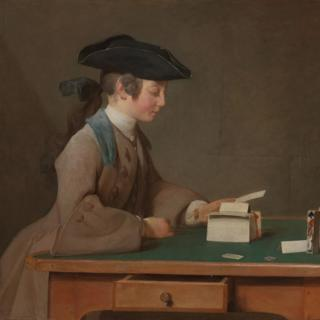
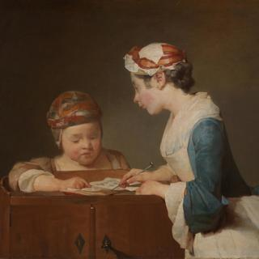
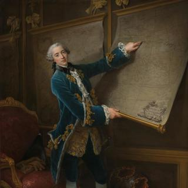
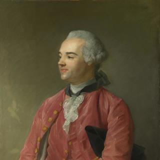
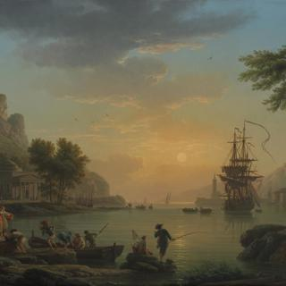
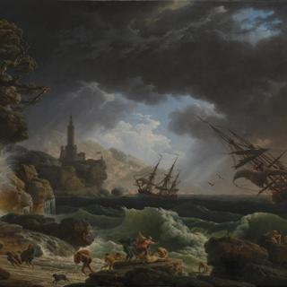
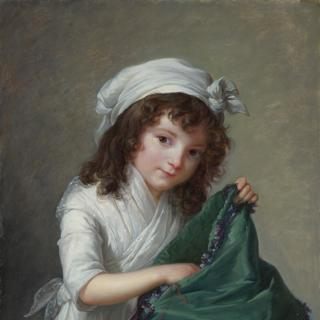

François Boucher, 'Landscape with a Watermill', 1755
François Boucher, 'Landscape with a Watermill', 1755
Overview
A weathered but picturesque watermill sits in a landscape that includes several idealised peasants engaged in tasks such as fishing, collecting water and washing clothes. Although this landscape has an air of decorative artificiality, even theatricality, Boucher includes sufficient detail to suggest it may have some basis in his direct observation of an actual place, possibly on the river Seine west of Paris.
Watermills were a popular subject among eighteenth-century French artists, who looked to pictures of them by Dutch painters of the previous century. But there are also echoes here of the seventeenth-century French artist Claude, particularly in Boucher’s use of tall trees to frame the scene as if it were a stage set. Against a pale sky, the entire landscape is suffused with silvery-green tones which Boucher counterbalances with areas of brighter colour, most notably the items of red clothing. The painting shows his characteristically fluid handling of paint.
In-depth
A weathered but picturesque watermill sits in a landscape that includes several idealised peasants engaged in tasks such as fishing, collecting water and washing clothes.
Although this landscape has an air of decorative artificiality, even theatricality, Boucher includes sufficient detail to suggest it may have some basis in his direct observation of an actual place. These details include a net hanging to the left of the mill door, a makeshift outdoor privy to the right of the door, and a small tower at the end of the bridge that seems to be a dovecote or a tollgate. Other details that add to the sense this is based on a real scene include the weeds hanging from the millwheel and a low dam that we can just glimpse further upstream through the arches of the bridge. The bridge’s central arches also frame two poles or stakes that may support fishing nets, reinforcing the impression this is a working landscape. White doves gather around a dovecote in the mill’s thatched roof.
Many of these elements also appear in a drawing by Boucher in the Museum of Fine Arts, Boston. Although signed, this drawing is undated and it is not possible to say if it was made before or after the painting, which Boucher has signed and dated (on the boat to the left of the picture). Although it is unlikely that the drawing was made on site, it may be based upon a study or sketch of somewhere that Boucher had visited. One potential clue is provided by an engraving made in 1772 after the drawing, which has the title Moulin près de Chatou (Mill near Chatou). On the right bank of the Seine, a few miles west of Paris, Chatou would become a favourite haunt of painters around 1900. However, its watermill was replaced by a windmill in 1684 and throughout the eighteenth century its bridge was made of wood rather than stone. If, as the print’s title suggests, the mill in Boucher’s drawing was near Chatou rather than in Chatou itself, the scene may be based on a neighbouring hamlet. One possibility is Mauport, also on the right bank, which in the late seventeenth century had a watermill and stake net. These may have still existed in the 1750s. Mills appear in other landscapes by Boucher, including the mill at Quinquengrogne, near Charenton, on the south-eastern outskirts of Paris. The mill in this picture has similar architectural features to the Quinquengrogne mill, but it has a simpler structure and lacks the striking elevated position of the site at Charenton.
Watermills were a popular subject among eighteenth-century French artists, who particularly looked to pictures of them by Dutch painters of the previous century such as Jacob van Ruisdael. Boucher owned a large chalk drawing by Ruisdael that featured cottages and a watermill. But there are also echoes here of Claude, particularly in Boucher’s use of tall trees to frame the scene as if it were a stage set. Against a pale sky, the entire landscape is suffused with silvery-green tones which Boucher counterbalances with areas of brighter colour, most notably the red items of clothing. The painting shows his characteristically fluid handling of paint.
- NG number
- NG6374
- Date made
- 1755
- Medium
- Oil on canvas
- Dimensions
- 57.2 × 73 cm

François Boucher, 'Pan and Syrinx', 1759
François Boucher, 'Pan and Syrinx', 1759
Overview
This small and intimate painting is a cabinet picture intended for private domestic display rather than public exhibition. It illustrates a story from Metamorphoses, the epic poem by the Roman poet Ovid. The wood nymph Syrinx is chased by the god Pan to the river Ladon, where she begs one of the river nymphs to disguise her by changing her shape. The river nymph, with her back towards us, obliges by transforming Syrinx into reeds.
Boucher uses fluid brushstrokes to create a surface that has an almost jewel-like brilliance. The blues and greens complement the fleshy pinks of the women, who seem to glow against their dark surroundings. The painting’s mix of hedonism, overt eroticism and ambiguous sexuality may have particularly appealed to the libertine tastes of the royal court before the arrival of a more moralising tone in both art and art criticism in the 1760s.
In-depth
This small and intimate painting is a cabinet picture intended for private domestic display rather than public exhibition. It illustrates a story taken from Ovid’s Metamorphoses. The wood nymph Syrinx is chased by the god Pan to the river Ladon, where she begs one of the river nymphs to disguise her by changing her shape. The river nymph, reclining on an urn with her back towards us, obliges by transforming Syrinx into reeds. According to the poem, Pan ‘thought he had caught Syrinx, instead of her held naught but marsh reeds in his arms.’
This story had previously been illustrated by many artists – you might want to compare Boucher’s painting with Hendrick van Balen the Elder’s version of the story, Pan pursuing Syrinx. However, Boucher takes some liberties with the poem. He does not follow the convention of including the river god Ladon, but instead represents the river with a nymph, enabling him to paint not one but two female nudes. And although Ovid’s story is one of sexual pursuit, there is little sense here of a frightened Syrinx actively trying to flee. Not only does she remain visible, even as Pan clutches an armful of reeds, but as she looks back over her shoulder at him her wide-eyed expression is as much coy as it is fearful.
Boucher may have been loose with his textual sources and with pictorial traditions, but his depiction of the story allowed him to reuse motifs and display his skilful technique. The reclining nude seen from the back was a figure he had often used, but several surviving chalk drawings, made from a model, also reveal his careful preparation for the painting, particularly the women’s poses. Boucher makes dramatic use of contrasts – for example, Pan’s dark skin and taut muscles contrast with the pale luminous tones and soft curves of the women’s bodies, which recall nudes by Rubens. As he lunges forward, Pan threatens to break into the protective oval cocoon formed by the sinuous outlines of the women, who become almost one body seen from both the front and from behind. This proximity, even merging, of the two nymphs suggests the possibility of a quite different sexual narrative. Not only does Syrinx seem as interested in her female companion as she is in Pan’s attention but he, like us, seems to intrude upon a private liaison between the two women.
The upward zigzag of the two cupids – one of whom holds the symbols of passion (an arrow and a flame) – further energises the composition. Boucher uses fluid brushstrokes to create a paint surface that in places has an almost jewel-like brilliance – look, for example, at the touches of bright white and blue in the draperies in the lower right corner. These colours, together with the greens of the reeds, complement the fleshy pinks of the women who seem to glow against their dark surroundings.
Pan and Syrinx was first owned by Armand-Pierre-François de Chastre de Billy, who was the king’s principal valet. The painting’s mix of sensual hedonism, overt eroticism and ambiguous sexuality may have particularly appealed to the libertine tastes of the royal court before the arrival of a more moralising tone in both art and art criticism in the 1760s.
- NG number
- NG1090
- Date made
- 1759
- Medium
- Oil on canvas
- Dimensions
- 32.4 × 41.9 cm

Jean-Siméon Chardin, 'The House of Cards', about 1740-1
Jean-Siméon Chardin, 'The House of Cards', about 1740-1
Overview
A young boy stands at a small wooden table fully absorbed in building a house out of playing cards. He is Jean-Alexandre Le Noir, whose father, Jean-Jacques Le Noir, was a furniture dealer and cabinet-maker, who commissioned several paintings from Chardin.
The theme of a child building a house of cards was a familiar one in which the delicately balanced cards represent the fragile nature of human endeavour. Pictures of this subject were often accompanied by moralising verses, as was Chardin’s painting when it was engraved. But there may also be a family connection. As a maker of fine furniture, Monsieur Le Noir may have hoped his son would follow him into the business. The boy’s card building is perhaps not just a game but may also be an exercise in sound methods of construction.
The picture is one of four identified versions of The House of Cards painted by Chardin.
In-depth
This picture is one of four identified versions of The House of Cards painted by Chardin. It is most likely the last version he painted and was probably exhibited at the Salon of 1741.
A young boy stands at a small wooden table, which is covered with green baize. Leaning forward slightly with his forearms resting on the table top, he is fully absorbed in the task of constructing a house out of playing cards. The first storey has already been completed and he is about to begin the second. The boy is Jean-Alexandre Le Noir, whose father, Jean-Jacques Le Noir, was a furniture dealer and cabinet-maker. A close friend of Chardin, who had witnessed the artist’s marriage in 1744, Jean-Jacques Le Noir had commissioned several paintings from him, including a portrait of Madame Le Noir (now lost and known only from an engraving). It has been proposed that other Le Noir children are shown in The Young Schoolmistress, which was painted a few years earlier. However, it is not possible to be certain, and the claim that the two paintings were companion pieces, intended to hang together, is unlikely.
The theme of a child building a house of cards was familiar to Chardin’s contemporaries from seventeenth- and eighteenth-century images, which were often accompanied by moralising verses. When an engraving of Chardin’s painting was made by François-Bernard Lépicié in 1743, the caption under the image included the lines: ‘Dear child on all pleasures bent / We hold your fragile work in jest / But think on’t, which will be more sound / Our adult plans or castles by you built?’ But even without the addition of the verse, the symbolism of the delicately balanced cards – signifying the fleeting and fragile nature of human endeavour – would have been clear.
Cards were also associated with gambling, but this does not appear to be Chardin’s concern here, despite the presence of a chip and a coin on the table. These seem to be of no interest to the boy (who anyway does not have a companion with whom to gamble) and were most likely left over from an earlier game of piquet. Nor does the boy have any interest in the value of the cards themselves. Indeed, he is looking at the blank reverse of the card he is holding. As stated in the catalogue of the 1741 Salon, the boy is simply ‘enjoying himself making a house of cards.’
The fact that this house of cards is only one storey high may be of significance. Contemporary paintings of this theme typically show the cards to be two or more storeys high – and thus at greater risk of collapse. It has been suggested that the incomplete house could be a metaphor for the child, who is not yet an adult. But there may also be more immediate family associations. As a maker of fine furniture, Monsieur Le Noir may have hoped that his son would follow him into the business. The boy’s card building is perhaps not just a game but may also be an exercise in methods of construction. ‘Noir’ means black in French, and the prominent display of two upright folded black suit cards (the spade and club) – whose tripartite shapes echo the boy’s black tricorne hat – is perhaps intended to suggest an association between the Le Noir family name and a profession based upon creating structures that will endure.
- NG number
- NG4078
- Date made
- About 1740-1
- Medium
- Oil on canvas
- Dimensions
- 60.3 × 71.8 cm

Jean-Siméon Chardin, 'The Water Cistern ('La Fontaine')', 1733 or later (possibly 1737-9)
Jean-Siméon Chardin, 'The Water Cistern ('La Fontaine')', 1733 or later (possibly 1737-9)
Overview
A maid, her face partially hidden by her white bonnet, draws water from a large copper cistern in a scullery with a cobbled floor. As she bends forward, her straight back leads us to an open doorway on the right through which we can see another servant talking to a young child, who stands before yet another door. The second servant also wears a white bonnet and her pose almost mirrors that of the woman filling the jug.
The device of a view through an open doorway to the side of the picture was often used by Dutch and Flemish artists, but Chardin’s painting is a still life as well as a scene of domestic life. In contrast to the human presence on the right, the left-hand side of the picture is filled with household objects. Full of detailed observation, this is a glimpse of servants’ lives ‘below stairs’, which were very different from those of the wealthy collectors who bought Chardin’s pictures.
In-depth
Among the works exhibited by Chardin at the Paris Salon of 1737 was a painting of ‘a girl drawing water from a cistern’ and another of ‘a serving woman doing the washing.’ Known respectively as La Fontaine (The Water Cistern) and La Blanchisseuse (The Washerwoman), they were among his earliest genre pictures. Chardin is said to have been provoked to paint them by his friend, the portraitist Aved, who reportedly remarked that, ‘You imagine that [painting portraits] is as easy as painting cakes and sausages.’
The Nationalmuseum in Stockholm has versions of both paintings, which were probably the first ones Chardin painted of these subjects – the Stockholm La Fontaine is signed and dated 1733 – and both were subsequently engraved by Charles-Nicolas Cochin in 1739. The two pictures were perhaps intended to be pendants, but it is impossible to be certain, not least because La Fontaine is painted on wood and La Blanchisseuse on canvas. However, in part because of their similar subjects, they have often been viewed and exhibited as a pair since they were hung together at the Salon of 1737.
The National Gallery’s version is most likely a replica painted by Chardin, who may have been prompted to make a copy of the painting after the original had been bought and exported to Sweden after the death in 1744 of its first owner, the collector Antoine de la Roque. However, it may have been painted earlier than this. It is a very close copy of the Stockholm picture but appears to have been quite rapidly painted, and with a greater contrast of light and dark, so it may have been made specifically for Cochin to use for his 1739 engraving.
We are looking here at a scullery with a cobbled floor in what is most likely a bourgeois home in Paris. A maid, her face partially hidden by her linen bonnet, draws water from a large copper cistern, her left arm pulled taut by the weight of the jug. The relative darkness of the room emphasises the reflected highlights of the cistern, jug and bucket handle, whose bright gleams contrast with the textures, softer tones and warmer colours that are used elsewhere and which bind the composition together – for example, the warm red of the joint of meat reflected on the copper urn. As the maid bends forward, her straight back leads us to an open doorway on the right through which we can see another woman talking to a young child, who stands before yet another door. The second servant also wears a white bonnet and her pose almost mirrors that of the woman filling the jug.
The device of a view through an open doorway to the side of the picture was often used by Dutch and Flemish artists, such as Teniers, Dou and Kalf, whose work Chardin may have known from French collections or from engravings. But Chardin’s picture is a still life as well as a scene of domestic life. In contrast to the human presence on the right, the left-hand side of the picture is filled with household objects that include a set of copper pans, a barrel and logs for the hearth. Full of detailed observation, the painting offers us a glimpse of servants’ lives ‘below stairs’, which were very different from those of the wealthy collectors who bought Chardin’s pictures.
- NG number
- NG1664
- Date made
- 1733 or later (possibly 1737-9)
- Medium
- Oil on canvas
- Dimensions
- 37.5 × 44.5 cm

Jean-Siméon Chardin, 'The Young Schoolmistress', about 1737
Jean-Siméon Chardin, 'The Young Schoolmistress', about 1737
Overview
A young child is being taught by an older girl, perhaps in her early teens, who is possibly an elder sister or another relation such as a cousin. Despite the picture’s title, this is a private lesson, probably taking place at home rather than at school. The younger child is most likely a boy, although we cannot be entirely sure.
The children appear to be from a middle-class family, which is well provided for but not ostentatiously wealthy. They belong, perhaps, to the growing French bourgeoisie that particularly admired Chardin’s pictures, which they often knew and owned as engravings of the original paintings. This class particularly valued education, especially literacy, which was no longer confined to the nobility and professional classes.
Although Chardin is extolling work and study over playful time-wasting, any moralising purpose to his painting is very understated. Instead, his attention is on a quiet moment of interaction between two individuals.
In-depth
A young child is being taught by an older girl, perhaps in her early teens, who is possibly an elder sister or another relation such as a cousin. Given the girl’s youthfulness, it is unlikely she is a governess. She is wearing an indoor nightcap decorated with a ribbon, known as a dormeuse, and a scarf and pinafore over her dress. The younger child is probably a boy, although we cannot be entirely sure. He wears a protective headdress known as a bourlet, which is also worn by children who are clearly boys in other paintings by Chardin.
Despite the picture’s title, this is a private lesson, taking place at home rather than at school. Both children lean forward slightly over a night table with a double door compartment, as the ’schoolmistress‘ points to the pages of the book open before them. The book is partly hidden by a loose sheet of paper covered in marks. It is impossible to make out what these marks are – partly due to Chardin’s distinctive method of keeping objects slightly out of focus – but as they are most likely letters, this is probably a reading lesson. The schoolmistress uses a sharp metal pointer, perhaps a knitting needle, positioned near the centre of the composition, her gesture repeated by the tiny hand of her young pupil.
The children appear to be from a middle-class family, which is well provided for but not ostentatiously wealthy. Their clothes and the undecorated table locate them within the domestic space of a middle-class home. They belong, perhaps, to the growing French bourgeoisie that particularly admired Chardin’s pictures, which they often knew and owned as engravings of his original paintings. This class particularly valued education, especially literacy, which was no longer confined to the nobility and professional classes. Education was available to girls, even if it was to prepare them for motherhood and domestic duties. But Enlightenment thinkers, such as Jean-Jacques Rousseau, also extolled the importance of childhood and cultivating young minds.
Chardin’s pictures of children and adolescents combine aspects of portraiture and genre painting. This painting has been linked to several Dutch paintings including Caspar Netscher’s A Lady teaching a Child to Read. Netscher’s painting was in the Orléans Collection in the Palais Royal in Paris when Chardin painted his picture, and it is likely he knew of it. Not only was Netscher’s painting titled La maîtresse d’école (The Schoolmistress) in the collection’s catalogue, but both paintings include a similar gesture of the young child’s right hand and the use of a pointer by the teacher. In Chardin’s painting, however, the teacher is an older sister or cousin, and not a mother or governess. Instead, the young teacher adopts the role of an ‘ideal’ mother educating her young child, perhaps in preparation for when she herself will be a mother. In effect, both children in the painting are learning.
Dutch genre paintings often have a didactic message, but although Chardin is extolling work and study over playful time-wasting, any moralising purpose to his painting is very low key. Instead, his attention is on a quiet moment of interaction between two individuals, whose relationship he conveys brilliantly not just through details of gesture, expression and clothing but also through the handling of the paint itself. The slightly out-of-focus treatment of the young child’s face suggests a self that is still emerging in contrast to the sharper definition of the older girl.
Three versions of The Young Schoolmistress exist. This version and one in the National Gallery of Ireland were painted by Chardin, although it is unclear which one was exhibited in the Salon of 1740. A third, in the National Gallery of Art, Washington, is a copy after Chardin. It has been suggested that one of these versions was intended to be a companion piece to The House of Cards, and the National Gallery’s versions of the two paintings are often hung together. However, the slightly different sizes of the canvases and the absence of any documentary evidence from when either picture was exhibited at the Salon mean this is unlikely. As The House of Cards shows the son of Chardin’s friend, Jean-Jacques Le Noir, it has been suggested that The Young Schoolmistress includes other Le Noir children. However, it has not yet been possible to confirm the two children’s identity. If The Young Schoolmistress was meant to be paired with another painting by Chardin, sales catalogues from the time point to Soap Bubbles (Les Bulles de Savon), of which there are three signed versions, as the most likely contender. This painting shows an older boy idling away his time as a younger child looks on, its implicit warning against time-wasting complementing that of The Young Schoolmistress.
Several engravings were made of The Young Schoolmistress. The first, which reversed the composition, was published by François-Bernard Lépicié in 1740. Titled La Maîtresse d’Ecole, this print included the following verses beneath the picture: ’If this charming child puts on so well / The serious manner and imposing appearance of a schoolmistress / May one not think that artifice and subtlety / Are granted to the fair sex no later than at birth.' These lines significantly alter the painting’s meaning by presenting the older girl as a wily, perhaps even mischievous, young adult, who is merely acting the part of a teacher. Subtle changes in the print itself heighten this transformation – for example, the strengthened definition around the eyes and greater emphasis to the eyelids and lips. In a later engraving, produced in 1752, the lips of the young schoolmistress were even coloured crimson. Whereas Chardin creates mystery by withholding narrative information, the engraving’s introduction of psychological clues and personalities, particularly to the schoolmistress, undermines the painting’s open-ended quality, where it is left up to us to speculate on the connection between these two young people.
The painting was a favourite of the British artist, Lucian Freud, who included it in his 1987 Artist’s Eye exhibition at the National Gallery. A few years later, following an invitation from the Gallery to produce a painting in response to its collection, he also made two copies in oil and two etchings of the painting. For these Freud slightly modified the composition – for example, removing the schoolmistress’s pointer and placing us at the table with the two children.
- NG number
- NG4077
- Date made
- About 1737
- Medium
- Oil on canvas
- Dimensions
- 61.6 × 66.7 cm

Jacques-Louis David, 'Portrait of Jacobus Blauw', 1795
Jacques-Louis David, 'Portrait of Jacobus Blauw', 1795
Overview
The Dutch patriot, Jacobus Blauw (1756–1829), played an important role in the foundation of the Batavian Republic in 1795. Although short-lived, it significantly contributed to the transformation of the Netherlands from a confederated structure into a democratic unitary state.
Blauw and the artist, Jacques-Louis David (1748–1825), shared the political ideals of the French Revolution that were sweeping across Europe in the 1790s, and the bond between the two men is evident in the relaxed intimacy of this portrait. David depicts the diplomat Blauw as he pauses while writing, his clothes and possessions painted in meticulous detail.
There are only two paintings by David in Britain – this, and the National Gallery’s Portrait of Comtesse Vilain XIIII and her Daughter.
In-depth
A man sits at a table, leaning forward slightly as he writes on a document. He pauses, as if to think for a moment or to acknowledge someone, his subdued but intense gaze producing an effect of great presence. He is elegantly dressed, but his plain clothes are not ostentatious. Unlike an aristocrat, he does not wear a wig; instead, it is his own hair that is powdered.
The simple format of this picture is similar to portraits David painted just a few years earlier, during the initial years of the French Revolution, in which an isolated figure is placed before a neutral background. However, the sparseness of those portraits is tempered here. Various objects – an inkwell, a gilt box, a quill pen – create a recognisable, everyday environment. David also paints Blauw’s clothing and accessories in meticulous detail: you can see traces of hair powder on the jacket’s collar and a hint of red reflected in its gleaming buttons. David’s skill with colour is especially evident as he coordinates the deep blue of the coat, turquoise-green of the tablecloth, pink handkerchief and hint of red chair fabric against a plain grey-brown background.
Jacobus Blauw was an important figure in the Dutch Patriotic movement, which helped establish the Batavian Republic in the Netherlands. Although short-lived, it contributed to the transformation of the Netherlands from a confederated structure into a democratic unitary state. Soon after the Republic’s formation, the French army invaded the Netherlands. Blauw was sent to Paris as the Dutch representative to negotiate a peace settlement – the Treaty of The Hague of 1795 – by which France recognised the new republic. While in Paris, Blauw most likely commissioned the portrait directly from David, as both shared a commitment to the republican ideals of the French Revolution. Their bond is evident in the relaxed intimacy of the painting, which makes this more than just a formal portrait of a civic official. Blauw’s new political status, following the treaty, is indicated on the paper, which bears the words J. BLAUW, ministre Plènipotentiaire aux États Généraux des provinces unies (‘J.BLAUW, minister Plenipotentiary to the Estates General of the United Provinces’).
David was the most important artist and propagandist of the French Revolution. Elected a Deputy to the National Convention, he had been instrumental in the abolition of the Académie and had voted for the execution of Louis XVI. A supporter of Revolutionary leader Robespierre, he was imprisoned twice after Robespierre had been deposed and only narrowly avoided execution himself. His signature, ‘L. David 4’, dates the work using the calendar created by the French Republic, revealing his continuing endorsement of the Revolution. You can see it within the folds of Blauw’s cape, in the lower left corner of the painting.
For David, the diplomat-intellectual Blauw, who was not yet 40, represented a new type of post-Revolutionary citizen – someone who maintained the aspirations of the Revolution and whose achievements were based upon ability rather than inherited status. Blauw, writing to David, thanked him profusely for bringing him to ‘life again on the canvas’.
- NG number
- NG6495
- Date made
- 1795
- Medium
- Oil on canvas
- Dimensions
- 92 × 73 cm

François-Hubert Drouais, 'The Comte de Vaudreuil', 1758
François-Hubert Drouais, 'The Comte de Vaudreuil', 1758
Overview
In this imposing portrait, designed to emphasis its sitter’s wealth and status, the eighteen-year-old comte de Vaudreuil (1740–1817) points at a map of Saint-Domingue (present-day Haiti and the Dominican Republic). His father was governor of the island, then a French colony, and the count earned substantial income from enslaved labour on its plantations.
Vaudreuil was a junior army officer, but instead of his uniform he wears a blue velvet coat lined with squirrel fur and a brocade waistcoat with festoons of gold and silver lace. His wig is tied in place by a black silk ribbon fastened in a bow at the neck. The red heels on his shoes indicate his aristocratic status. Drouais’s idealising portraits often flattered his sitters. Although still only a young man and hardly in need of flattery, the count has a flawless complexion with rosy cheeks and lips and large, bright eyes. The portrait has an air of informality and, rather than military stiffness, Vaudreuil’s long slender body has a slight tilt.
In-depth
Joseph-Hyacinthe-François de Paule de Rigaud, comte de Vaudreuil (1740–1817), was only eighteen when this imposing portrait was painted by Drouais in 1758. He was the son of the governor and commander-general of Saint-Domingue, at that time a French colony on the western end of the Caribbean island of Hispaniola, which is why he points to it on a map. Without lifting a finger, the count earned substantial income from enslaved labour on its plantations.
Vaudreuil was in France by 1757, having left Saint-Domingue (his father ceased to be governor the same year). When his portrait was painted, he was a junior army officer and had already been at the Battle of Rossbach (5 November 1757) in Saxony during the Seven Years War, when the French had suffered a disastrous defeat by the Prussians. Although he is not in uniform, the armour at the bottom right of the painting and the map, titled (in French) ‘the German Empire,’ behind his head allude to his military service. The reference to Germany was not just personal but also contained a political message: by turning his back on the map of Germany and partially covering it with a map of the Caribbean showing Saint-Domingue, Vaudreuil asserts the importance of the colony for French interests and its importance relative to continental Europe. The fall of Guadeloupe to the British on 1 May 1759, just weeks before the opening of the Salon, where the portrait may have been exhibited, would have made this message even more pointed.
Instead of his uniform, Vaudreuil wears a blue velvet coat lined with squirrel fur and a brocade waistcoat with festoons of gold and silver lace. His wig is tied in place by a black silk ribbon fastened in a bow at the neck. The red heels on his shoes indicate his aristocratic status. Behind him is a giltwood Louis XV chair covered with red damask on which he has placed his black tricorne hat and leather gloves. This meticulous attention to detail, especially the depiction of luxurious fabrics, was typical of Drouais’s style and can be seen in his portrait of Madame de Pompadour. Drouais’s idealising portraits, which often flattered his sitters, were hugely popular with the French elite. Although still only a young man and hardly in need of flattery, the count has a flawless complexion with rosy cheeks and lips and large bright eyes. Despite Vaudreuil’s status, the portrait has an air of informality and, rather than military stiffness, his long slender body has a slight tilt.
The count continued his military career while also amassing great wealth through inheritance and from his sugar cane plantations at Saint-Domingue. A collector and patron of the arts, he was a close friend of Elisabeth Vigée Le Brun, who claimed he had ‘every quality and grace which can render a man attractive.’ Vaudreuil was part of the circle around Queen Marie Antoinette and, like many aristocrats, fled France within days of the fall of the Bastille in July 1789, at the start of the French Revolution. With the restoration of the French monarchy in 1814, he returned to France, where he died in 1817. In 1791 a rebellion by its enslaved population broke out on Saint-Domingue. The new French Republic abolished slavery in its colonies in 1794, although it was temporarily restored by Napoleon in 1802. The French finally withdrew in late 1803 and the following year western Hispaniola declared independence as Haiti, its indigenous name.
- NG number
- NG4253
- Date made
- 1758
- Medium
- Oil on canvas
- Dimensions
- 225.4 × 161.3 cm

Jean-Honoré Fragonard, 'Psyche showing her Sisters her Gifts from Cupid', 1753
Jean-Honoré Fragonard, 'Psyche showing her Sisters her Gifts from Cupid', 1753
Overview
This is an early work by Fragonard, which was presented to Louis XV at Versailles in 1753. It illustrates an episode from the classical story of Cupid and Psyche, retold in a book by Jean de La Fontaine. Having fallen in love with Psyche, Cupid only visited her at night, forbidding her to look at him. Here we see Psyche, dressed in white and waited upon by nymphs, welcoming her two sisters into Cupid’s palace where she shows them the gifts she has received. Provoked by envy – represented by an allegorical figure above them clutching snakes – the two sisters persuade Psyche to reveal Cupid’s identity and thereby destroy her happiness. It has been suggested that the figure of Psyche here may have been inspired by the King’s mistress, Madame de Pompadour.
The scene is filled with luxury items, flowers and jewels, but some of the original details are missing as the picture has been cut down.
In-depth
This painting illustrates an episode from the classical story of Cupid and Psyche. Having fallen in love with Psyche, Cupid only visited her at night, forbidding her to look at him. Here we see Psyche welcoming her two sisters into Cupid’s palace where she shows them the gifts she has received. Provoked by envy – represented by an allegorical figure above them who is clutching snakes – the two sisters persuade Psyche to reveal Cupid’s identity and thereby destroy her happiness.
The story was originally told by Apuleius (c.124–c.170 AD) in Book V: 7–10 of his Latin prose work Metamorphoses (also known as The Golden Ass). However, Fragonard’s painting – particularly the abundance of figures and objects – owes more to Jean de La Fontaine’s Les Amours de Psiché et Cupidon, which was first published in 1669 and frequently republished.
Some detail is now missing as the canvas has been cut down – it has lost around 26 cm from the top and around 35 cm on the left hand side. In what would originally have been the middle of the picture, the two sisters stand flanked by the giant columns of Cupid’s palace. On the right, Psyche, swathed in white, reclines as she is attended to by two nymphs, one of whom dresses her hair. Three more nymphs are on the left. Two are holding the fabrics that Psyche is showing to her sisters. Part of another (sixth) nymph can just be glimpsed at the very left edge of the picture. Fragonard has also filled the scene with an array of luxury items, including golden vases and a perfume burner, and Cupid’s full quiver lies on the ground. Flowers and jewels are scattered throughout. Jewellery, especially, was central to La Fontaine’s narrative, and it is possible that the piles of jewels he describes were originally in the bottom left corner of the picture before the canvas was cut down.
This is an early work by Fragonard, painted the year he was admitted as a pupil to the Ecole royale des élèves protégés, then under the direction of Carle Vanloo. At that time pupils at the school were required to produce a work to show to the King at Versailles. This painting was among those presented in 1753. It was an immediate success, but later passed into obscurity when it was also attributed to Vanloo. Before he arrived at the school, Fragonard studied with Boucher during 1752–3 and, perhaps not surprisingly, the picture shows the influence of the older painter. Many of its details derive from sketches made by Boucher in 1737 for a tapestry illustrating the same story. However, Fragonard’s painting shows more movement – for example, in the opposing diagonals of Psyche and the figure of Envy or the almost Baroque upward lift of the columns and putti. Fragonard’s colours are also sharper, such as the pale lemon dress of one of the sisters, its acidic tone perhaps denoting her envy.
It has been suggested that the figure of Psyche may have been inspired by the King’s mistress, Madame de Pompadour. She is shown later in life in Drouais’s Portrait of Madame de Pompadour at her Tambour Frame.
- NG number
- NG6445
- Date made
- 1753
- Medium
- Oil on canvas
- Dimensions
- 168.3 × 192.4 cm

Nicolas Lancret, 'A Lady in a Garden having Coffee with Children', probably 1742
Nicolas Lancret, 'A Lady in a Garden having Coffee with Children', probably 1742
Overview
A wealthy family enjoy coffee beside a fountain. The mother offers a spoon from her cup to her little daughter. The father sits beside them holding the tray while their servant pours coffee from the pot into his cup. The painting is more likely to be a genre scene than a portrait of a particular family as none of the figures shows any awareness of the viewer, as would be usual in a portrait. The painting used to be known as ‘La Tasse de Chocolat’ (‘The Cup of Chocolate’) until it was noticed that the pot is one generally used for serving coffee.
The sentiment the figures display, their solid positioning in space, the compositional balance between the triangle made by the family group and the circular form of the fountain and the play of strong colours across the picture’s surface make this one of Lancret’s most accomplished paintings.
In-depth
A wealthy family enjoy coffee beside a fountain in parkland. The mother offers a spoon from her cup to her little daughter, while the father sits beside them holding the tray as their servant pours coffee from the pot into his cup. The painting is more likely to be a genre scene than a portrait as none of the figures shows any awareness of the viewer, as would be usual in a portrait.
This painting used to be known as ‘La Tasse de Chocolat’ (‘The Cup of Chocolate’) until it was noticed that the pot is one generally used for serving coffee. This suggestion is supported by the presence of the sugar pot on the tray. Sugar lumps, as shown here, would be added to coffee rather than hot chocolate. When sugar was added to chocolate it was always in powdered form rather than in lumps. As further evidence, when a version of the painting was shown at the 1742 Salon, it was described as: ‘A lady in a garden having coffee with children.’
Drinking coffee was advised in the morning and after lunch. The direction of the light in the painting suggests that this is a morning scene. People who drank coffee for pleasure rather than for medical reasons usually had it served on coffee trays in cups made of porcelain, glass or faience. In this painting, the sugar bowl and the cups and saucers appear to be of early eighteenth-century Saint-Cloud soft-paste porcelain. It has been suggested that the subject matter of this picture indicates the importance that wealthy families attached to educating a child’s taste in coffee drinking.
It is possible that the painting was intended as part of a set for a decorative scheme by one or more artists, but we do not know for certain if this was the case. If so, the picture may have been intended to represent Taste in a series of the five senses.
The fashion for painting Parisian society at leisure had been boosted by the exhibition of Watteau’s Gersaint’s Shop Sign (Charlottenburg Palace, Berlin). The poses of the father and mother in Lancret’s painting are similar to those of the woman leaning on the counter and the sales lady in Watteau’s work, while the servant holding the coffee pot resembles in reverse Watteau’s shop owner. However, it is unclear whether Lancret was consciously borrowing from Watteau at this late stage of his career. If so, he did it with great imagination to create a painting entirely different in tone and subject matter from anything by Watteau.
The sentiment displayed by the figures, their solid positioning in space, the compositional balance between the triangle made by the family group and the circular form of the fountain and the play of strong colours across the picture’s surface make this one of Lancret’s most accomplished paintings.
- NG number
- NG6422
- Date made
- Probably 1742
- Medium
- Oil on canvas
- Dimensions
- 88.9 × 97.8 cm

Jean-Baptiste Perronneau, 'Jacques Cazotte', probably 1753
Jean-Baptiste Perronneau, 'Jacques Cazotte', probably 1753
Overview
Jacques Cazotte (1719–1792) is best known as the author of Le Diable amoureux (‘The Amorous Devil’), and other fantastical fiction. He was also a colonial administrator, a maker and supplier of fine wine, an amateur painter, a collector of old master paintings and a dabbler in counter-revolutionary circles. His epic prose poem Ollivier, based on Ariosto’s Orlando Furioso, was published in 1763 to immediate success.
However, Cazotte’s life was to be cut short by the French Revolution. After personal letters setting out his political opinions were discovered in 1792, he was arrested and imprisoned for counter-revolution. On 25 September 1792, he was executed on the guillotine, where he exclaimed to the crowd: ‘I die as I have lived, faithful to God and to my king.’
Cazotte appears relaxed and amused, with his hat tucked under his arm. The portrait may have been commissioned in 1753 when Perronneau became an Academician – a date which would be consistent with Cazotte’s age here.
In-depth
Jacques Cazotte (1719–1792) is best known as the author of Le Diable amoureux (‘The Amorous Devil’), a tale about a devil disguised as a beautiful woman trying to take possession of a man, and other fantastical fiction. He was also a colonial administrator, a maker and supplier of fine wine, an amateur painter, a collector of old master paintings and a dabbler in counter-revolutionary circles.
Born in Dijon, Cazotte worked in Martinique until ill health forced him to retire. In 1760 he inherited a chateau at Pierry near Châlons-sur-Marne, including vineyards, which allowed him to live in ease and concentrate on producing and marketing his wines. In 1761 Cazotte married Elisabeth Roignan. The couple had three children.
From 1760 Cazotte began writing regularly, although an early work, his romantic fairy tale La Patte du Chat, had been published in 1741. His epic prose poem Ollivier, based on Ariosto’s Orlando Furioso, was published in 1763 to immediate success. However, Cazotte’s life was to be cut short by the French Revolution. He saw the rise of Revolutionary fervour in France as a fight between Good, represented by Louis XVI, and Evil, represented by the Revolution. He wanted the monarchy to be strengthened and a return to the laws of the past to correct current abuses. Cazotte set out his political views in a series of letters, which turned out to be his undoing. After the letters were discovered in 1792, he was arrested and imprisoned for counter-revolution. He was found guilty and sentenced to death. On 25 September 1792, he was executed on the guillotine, where he met his death with great courage, exclaiming to the crowd: ‘I die as I have lived, faithful to God and to my king.’ All of Cazotte’s property, including his library and collection of 104 pictures (some, he claimed, by Poussin, Titian and Lesueur), was confiscated, leaving his widow and daughter destitute.
Perronneau’s portraits are known for their strong colours and bold mark-making. He uses sophisticated combinations of colour – for example blue and green in the flesh tones and pink, yellow and blue streaks in the sitters’ powdered hair. Perronneau’s portrait is unusual in showing the sitter turned away from us, as though in lively conversation with someone to his right. Cazotte appears relaxed and amused, with his hat tucked under his arm. He wears a coat and waistcoat of salmon pink silk lined with white. The vivacity of the expression is matched by the brilliant handling of the pink costume. In these respects the portrait contrasts with the more direct approach of La Tour as shown in his portrait of Henry Dawkins. The Flemish lace of Cazotte’s shirt frill, which matches his ruffled cuff, is thrown into prominence by the black silk ribbon, known as a solitaire, tied round his wig at the back with the ends brought round and pinned under his lace frill.
The portrait may have been commissioned in 1763 to celebrate the success of Cazotte’s prose poem, Ollivier, or perhaps in 1753 when Perronneau became an Academician, which would be more consistent with Cazotte’s age here.
- NG number
- NG6435
- Date made
- Probably 1753
- Medium
- Oil on canvas
- Dimensions
- 92.1 × 73 cm

Pierre Subleyras, 'Diana and Endymion', about 1745
Pierre Subleyras, 'Diana and Endymion', about 1745
Overview
This painting shows an episode from Ovid’s Art of Love (Book III: 83). The Roman goddess Diana would visit the shepherd Endymion every night while he slept. According to Cicero, Diana herself induced Endymion’s sleep so that she could enjoy him undisturbed. The subject was a popular one and had been painted by other French artists.
In 1728 Subleyras arrived in Rome to study, and he remained there for the rest of his life. This picture, particularly Endymion’s reclining pose, shows Subleyras’s knowledge of antique sculpture and Italian Renaissance painting. The painting’s balanced composition and restrained depiction of its poetic source – for example, the delicate way Diana barely touches Endymion’s face – connects it to pastoral and classical tastes that were promoted in Rome at the time.
In-depth
This painting shows an episode from Ovid’s Art of Love (Book III: 83). The Roman goddess Diana would visit the shepherd Endymion every night while he slept. According to Cicero, Diana herself induced Endymion’s sleep so that she could enjoy him undisturbed. Cicero’s account had been newly translated into French in 1732, and two further editions were published during Subleyras’s lifetime. However, the story of the love-struck goddess had been painted so often that Subleyras would have already known the key components of the story. These include the nude, or near nude, Diana hovering at dusk close to a similarly near nude shepherd holding a staff, with dogs, and perhaps sheep, as well as putti in the background. Versions of the story by contemporary French artists, including Boucher, could be seen in Paris and Versailles.
In 1728 Subleyras arrived in Rome to study at the French Academy there, and he remained for the rest of his life. In Rome he would have seen Annibale Carracci’s fresco of the story at the Palazzo Farnese, and he may have already seen prints of the fresco beforehand. It is possible that Carracci’s fresco is the source for the putto in the upper right corner with his finger to his mouth requesting silence, as this gesture was not common to all depictions of the story. Subleyras would also have known the life-size marble sculpture of the Barberini Faun. Discovered in the 1620s and gradually restored over subsequent decades, the antique statue was housed in the Palazzo Barberini in Rome. It had already become famous through engravings and the French sculptor Edmé Bouchardon, a fellow student at the Academy, was also making a marble copy of it when Subleyras arrived in the city. The Faun may have provided a model for Subleyras’s reclining Endymion, especially the torso and left arm, but Endymion’s head is more likely based upon another classical sculpture of the Dying Alexander (Uffizi, Florence).
Despite Subleyras’s use of visual sources he encountered in Rome, we cannot assume he painted Diana and Endymion soon after his arrival there. The picture more likely dates from the early to mid 1740s, when he would have seen a marble group of Diana and Endymion (1735–40) by René-Michel (called Michel-Ange) Slodtz. Subleyras and Slodtz had been friends when they were both at the French Academy, and Subleyras’s painting may have been a response to Slodtz’s sculpture of the same subject – an instance, perhaps, of friendly rivalry between different media. Both men were elected members of the Academia dell’Arcadia (an elite Roman literary society) – Subleyras in 1743 and Slodtz the following year. As an example of pastoral drama, the subject of Diana and Endymion may well have appealed to fellow Arcadians. The picture’s balanced composition and restrained depiction – for example, the delicate way Diana barely touches Endymion’s face – connects it to an ideal of Arcadian classicism promoted by the Academia dell’Arcadia.
- NG number
- NG6592
- Date made
- About 1745
- Medium
- Oil on canvas
- Dimensions
- 73.5 × 99 cm

Claude-Joseph Vernet, 'A Landscape at Sunset', 1773
Claude-Joseph Vernet, 'A Landscape at Sunset', 1773
Overview
This is one of two paintings originally commissioned as a pair by Stanislas Augustus, King of Poland, in June or July 1772. However, concerned that the King was slow to pay, Vernet instead sold the pictures to the British officer and East India Company official Lord Clive (known as Clive of India).
This painting, originally known as ‘Calme’, was painted first. It shows an imaginary harbour as fishermen return with their catch on a tranquil summer’s evening. The golden setting sun is at the centre of the composition above the misty horizon, its light illuminating the undersides of the clouds and reflecting off the ripples on the calm sea. A ship has just arrived – it is just possible to make out the tiny figures on its mast yards furling the sails – and is being towed by two launches into the harbour.
‘Calme’ and its pair ‘Tempête’ are two of Vernet’s greatest marine paintings, and the only great pair of marine views by him in a British public collection.
In-depth
This is one of two paintings originally commissioned as a pair by Stanislas Augustus, King of Poland, in June or July 1772. However, concerned that the King was slow to pay, Vernet instead sold the pictures to the British officer and East India Company official Lord Clive (known as Clive of India).
‘Calme’, which Vernet painted first, shows an imaginary harbour as fishermen return with their catch on a tranquil summer’s evening. The golden setting sun is at the centre of the painting above the misty horizon, its light illuminating the undersides of the clouds and reflecting off the ripples on the calm sea. At the entrance to the port is a lighthouse and some fortifications; a classical temple stands on the left-hand shore at the foot of a high wooded mountain. A ship has just arrived – it is just possible to make out the tiny figures on its mast yards furling the sails – and is being towed by two launches into the harbour.
In his letter to Clive’s agent, the English banker Henry Hoare, Vernet wrote about this painting: the ‘foreground is bedecked with numerous figures: fishermen unloading their catch from a boat, women waiting to get hold of them; a fisherman with a rod with his wife sitting next to him make a contrast to the sun’s disc, which is striking; overall this picture has a rich, harmonious composition.’
Light, shadow and atmosphere are the true subjects of Vernet’s painting, the figures in the foreground merely a foil to the hazy meeting of water, light and air. The painting follows in the tradition of the Italianate seaport paintings of Claude such as A Seaport of 1664, and Seaport with the Embarkation of Saint Ursula of 1641. In the pendant painting, ‘Tempête’ (‘Storm’), Vernet explores contrasts of light and extremes of weather.
Vernet’s landscapes and seascapes and the effects of weather were perceived as true to nature, and the ships in his marine views were based on careful observation. The nearest ship seen here is a two-decker of 50 guns with a correct build for the 1770s, probably a warship since it is flying a long naval style pennant, an exaggeratedly long Dutch flag, and possibly an East Indiaman.
Vernet’s paired seascapes were intended to have an emotional effect on their viewers, the serene beauty of ‘Calme’ contrasting with the sublime horror of ‘Tempête’. He was exploring fashionable ideas expressed in Edmund Burke’s A Philosophical Enquiry into the Origins of Our Ideas of the Sublime and the Beautiful (1757; first French edition 1765) – a text that had a significant influence on the Romantic and Gothick movements in European art and literature.
These are two of Vernet’s greatest marine paintings and the type of work for which he was most famous in his day. They are the only great pair of marine views by him in a British public collection.
- NG number
- NG6600
- Date made
- 1773
- Medium
- Oil on canvas (unlined)
- Dimensions
- 114.5 × 163.5 cm

Claude-Joseph Vernet, 'A Shipwreck in Stormy Seas', 1773
Claude-Joseph Vernet, 'A Shipwreck in Stormy Seas', 1773
Overview
This is one of a pair of seascapes, originally commissioned on behalf of the King of Poland, that the British officer and East India Company official Lord Clive (known as Clive of India) bought from Vernet in 1773.
Originally known as ‘Tempête’ (Storm), it depicts a rocky shoreline buffeted by a violent sea storm. Two ships roll in the giant swell, sails tied down or tattered by the turbulent winds and lashing rain, while a third ship lies shattered against the rocks. Figures carry salvaged goods up the shore, while an unconscious woman is laid out on a rock, her friends overwhelmed with despair.
The extreme, turbulent elements depicted here contrast with the tranquil atmosphere of its pair, ‘Calme’, reflecting ideas fashionable at the time about the beautiful and sublime in nature and art. They are the only great pair of marine views by Vernet in a British public collection.
In-depth
This is one of a pair of paintings, originally commissioned on behalf of the King of Poland, that the British officer and East India Company official Lord Clive (known as Clive of India) bought from Vernet in 1773
Vernet’s own descriptions of the paintings bought by Clive, which were originally called ‘Calme’ and ‘Tempête’, were essentially concerned with their composition, light effects and the contrasting states of nature they depict. This painting shows a rocky shoreline buffeted by a violent sea storm. Two ships roll in the giant swell, sails tied down or tattered by the turbulent winds and lashing rain. Bolts of lightning streak from the dark thunder clouds that cover the sun, but the lighthouse lamp is not lit. Huge waves crash over the shore, pouring like waterfalls back down from the cliffs. The remains of a ship lie shattered against the rocks in the lower right foreground. Figures carry salvaged goods up the shore, while an unconscious woman is laid out on a rock, her friends overwhelmed with despair. Further down the coast there is a break in the clouds and sunlight bathes the mountainous landscape. It appears that the devastating storm has arrived suddenly and without warning, leaving no time for the lighthouse lamp to be lit. Perhaps the distant sunlit landscape is to give us hope that the storm will soon abate.
The extreme, turbulent elements depicted here contrast with the tranquil atmosphere of ‘Calme’, reflecting ideas fashionable at the time about the beautiful and sublime in nature and art. These were set out in Edmund Burke’s A Philosophical Enquiry into the Origins of Our Ideas of the Sublime and the Beautiful (1757; first French edition 1765) – a text that had a significant influence on the Romantic and Gothick movements in European art and literature. Vernet juxtaposes the tranquil beauty of ‘Calme’ with the sublime power of ‘Tempete’ to inspire our delight and pleasure in untamed nature.
Vernet’s landscapes and seascapes and the effects of weather were perceived as true to nature, and the ships in his marine views were based on careful observation. The heavily armed boats in this picture were probably built in the 1720s or 1730s, their short pennants identifying them as (armed) merchantmen. The ship in the middle distance towards the left is single-decked and appears to be flying a British Red Ensign. The ship on the right is twin-decked, with the gun-ports of the lower deck closed, presumably because of the heavy seas. Painted shipwrecks were fictional representations of an ever-present reality in an age when losses at sea were commonplace.
‘Calme’ and ‘Tempête’ are two of Vernet’s greatest marine paintings and the type of work for which he was most famous in his day. They are the only great pair of marine views by him in a British public collection.
- NG number
- NG6601
- Date made
- 1773
- Medium
- Oil on canvas
- Dimensions
- 114.5 × 163.5 cm

Elisabeth Louise Vigée Le Brun, 'Alexandrine-Emilie Brongniart', 1788 or 1789
Elisabeth Louise Vigée Le Brun, 'Alexandrine-Emilie Brongniart', 1788 or 1789
Overview
Alexandrine-Emilie Brongniart (1780–1847) was most likely eight years old when this engaging portrait of her was painted by the celebrated artist Elisabeth Louise Vigée Le Brun. Wearing an informal knotted scarf on her head, matching white dress and a translucent shawl around her shoulders, Emilie looks directly at us as she searches inside a green silk bag containing balls of wool. Her dark curly hair, which is fashionably long and styled to look natural, frames her pale face, which shows a lively interest in our presence.
There was a close bond between the artist and the Brongniart family. Vigée Le Brun’s daughter Julie was seven months older than Emilie, and the two often played together. The portrait shows the influence of portraits of children by Greuze, but Le Brun avoids the overt sentimentalism that could be a feature of Greuze’s children and presents instead an image of an independent and inquiring young girl.
In-depth
Alexandrine-Emilie Brongniart (1780–1847) was most likely eight years old when this engaging portrait of her was painted by the celebrated artist Elisabeth Louise Vigée Le Brun. Wearing an informal knotted scarf on her head, matching white dress and a translucent shawl around her shoulders, Emilie looks directly at us as she searches inside a green silk bag containing balls of wool. Her dark curly hair, which is fashionably long and styled to look natural, frames her pale face, which shows a lively interest in our presence.
Emilie, who was to become Baronne Pichon, was the youngest of the three children of Alexandre-Théodore Brongniart and Anne-Louise d’Egremont (or d’Aigremont). Her father was a very successful property developer and architect, whose best-known works include the Paris stock exchange and Père Lachaise cemetery. The family moved in artistic circles and included Jacques-Louis David among their friends. David helped Emilie learn to draw and in 1793 Madame Brongniart was to seek his help when her husband needed political protection.
The 1780s had been particularly good for Emilie’s father who, like many liberal bourgeois, welcomed the events of 1789, which signalled the start of the French Revolution. For Vigée Le Brun, however, the effect of these events was quite different. Due to her close connection with the court, and particularly with Queen Marie-Antoinette, whose portrait she first painted in 1778, she received threats and verbal abuse. It was the Brongniart family who offered her temporary refuge in the autumn of 1789 prior to her leaving for Italy in October. By this time, Vigée Le Brun had formed a close friendship with the family and had already painted portraits of the elder Brongniart children, Alexandre and Louise. Her own daughter Julie was just seven months older than Emilie and the two regularly played together. The close bond between Vigée Le Brun and the Brongniarts survived the Revolution. Monsieur Brongniart was one of the 255 signatories to a petition of July 1799 seeking Vigée Le Brun’s removal from the list of émigrés (the mostly aristocratic exiles who had fled France and were viewed as potential traitors). Both he and his wife were also among the first to call for Vigée Le Brun’s return to Paris in January 1802, the year Napoleon granted an amnesty to most émigrés.
Vigée Le Brun most likely painted this portrait in 1788, the year Emilie turned eight, or possibly in 1789. There are similarities with the artist’s slightly earlier portrait of her own daughter Julie Le Brun holding a Bible of 1787 (private collection, New York), notably the angle of the head and the direct gaze of both girls, who are each shown with an object (a Bible and a bag of wool). Vigée Le Brun may have originally intended Emilie to wear a long-sleeved dress. With the sleeve removed, the exposed underarm subtly captures the reflected green of the bag and the red of the wool. Both portraits show the influence of Greuze’s portraits of children, of which there are several examples in the National Gallery’s collection. In this portrait, however, she avoids the overt sentimentalism that could be a feature of Greuze’s children and presents instead an image of an independent and inquiring young girl.
- NG number
- NG5871
- Date made
- 1788 or 1789
- Medium
- Oil on wood (probably oak)
- Dimensions
- 65.1 × 53.3 cm

Jean-Antoine Watteau, 'The Scale of Love', probably 1717-8
Jean-Antoine Watteau, 'The Scale of Love', probably 1717-8
Overview
This picture is a fine example of Watteau’s work on an intimate scale. The title The Scale of Love (La Gamme d’Amour) comes from a print of it made several years after his death. It may be a reference to the musical scale, to the various stages of flirting and seduction, or to the music which facilitates these. The word gamme had other secondary meanings, such as knowledge, ability and custom, perhaps reinforcing the notion here of love or seduction as a skill. The sculpted bust is possibly Pythagoras, who is credited with discovering a musical scale based upon a mathematical ratio.
Watteau may have chosen the man’s fantasy theatrical costume to poetically distance the scene from his own time. The painting shows his skill in composition and as a colourist, with its warm harmonies of pink, red and russet brown.
In-depth
Scenes of couples making music have a long tradition in European art, especially in Northern and Venetian painting. The subject was also a familiar one in pastoral poetry, and the associations between Watteau’s paintings, music and poetry were recognised by his contemporaries.
The guitarist here is dressed in a theatrical costume. Watteau may have chosen its old-fashioned style to distance the scene from his own time. The woman’s informal clothing is not specific to any period, so it also helps set the scene in an undefined time. She looks at the guitarist’s left hand as he is about to play a note, their collaboration on the musical score perhaps providing an opportunity for flirting. The portrayal of the couple also shows Watteau’s skill in composition and as a colourist – look, for example, at the diagonal that runs upwards from the woman’s foot, across the musical score and along the neck of the guitar and at the warm harmonies of pinks, reds and russet browns.
At the top of the picture, Watteau has included a herm (a squared stone pillar mounted by a carved head that often served as a signpost or boundary marker). The bearded man may be Pythagoras, who is credited with discovering a musical scale based upon a mathematical ratio. A reference to Pythagoras would relate to the title of the painting, which comes from a print of it made several years after Watteau’s death. The Scale of Love (La Gamme d’Amour) may evoke the musical scale, the various stages of flirting and seduction, or the music which facilitates these. The word gamme had other secondary meanings (such as knowledge, ability and custom), perhaps reinforcing the notion here of love or seduction as a skill or technique.
To the right, another couple are seated on the ground, and in the background a third couple leave the scene. A woman with a child leaning into her lap sits between the guitarist and the seated couple. She may be the same woman who is leaving with her male companion, but later in life. The possibility that a child could be the result of their liaison is implied in verses added to an engraving of a similar painting by Watteau in which the children in the picture are referred to, perhaps slightly ironically, as the fruits of tender love.
Although the guitarist is dressed in fantasy costume, his guitar is an accurate representation of a type made by the Voboam dynasty of instrument makers in Paris from 1650 to 1730. The musical score is not a genuine piece of music. A possible title at the top of the left-hand page is illegible, the music itself is a single line melody rather than a score for a singer and guitar accompaniment, and there is no numbering denoting the chords typical of guitar music.
The principal couple in the painting are similar to the male guitarist and his female companion in another work by Watteau, La Récréation galante (Gemäldegalerie, Berlin). It is likely that Watteau worked on the two pictures simultaneously, completing them by 1718. Although smaller, the National Gallery’s picture is a fine example of Watteau’s work on a more intimate scale.
- NG number
- NG2897
- Date made
- Probably 1717-8
- Medium
- Oil on canvas
- Dimensions
- 50.8 × 59.7 cm